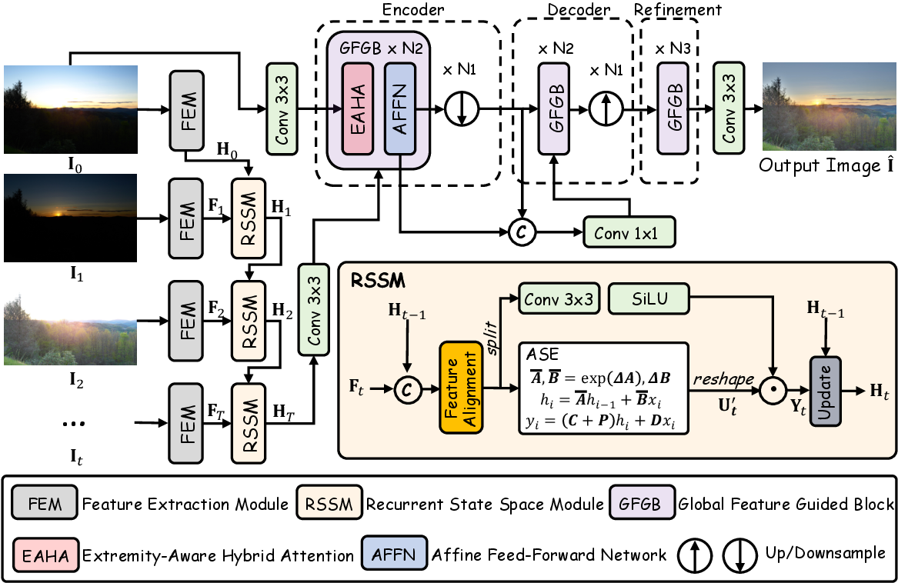
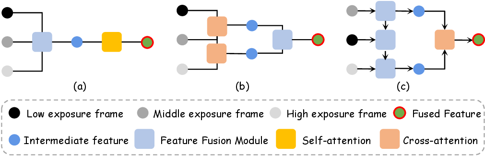
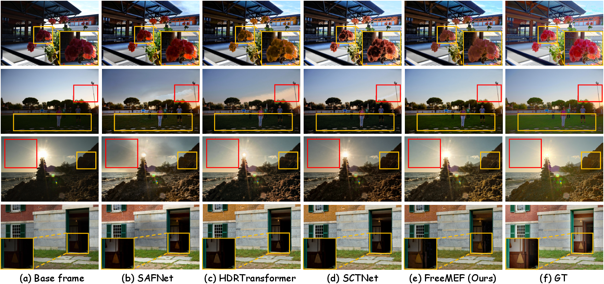
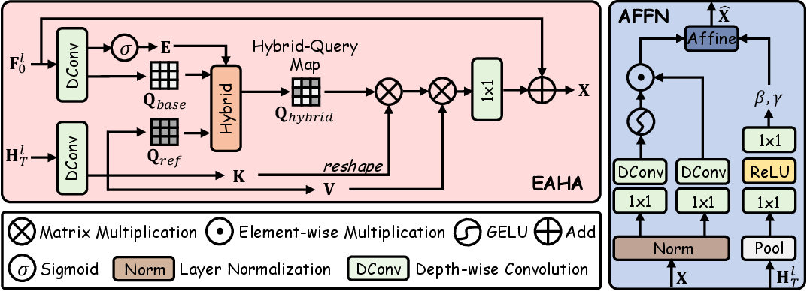
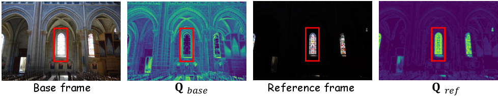
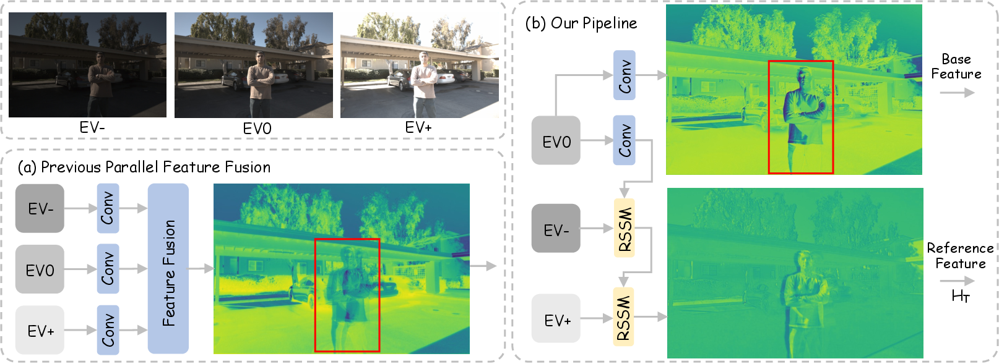
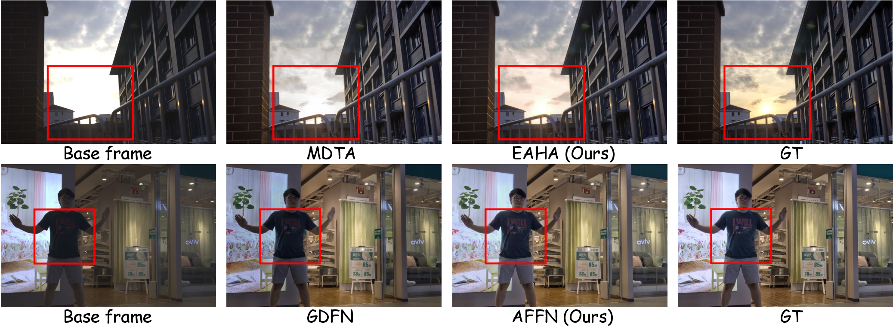
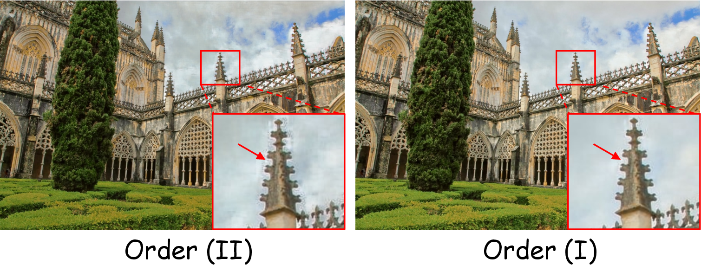
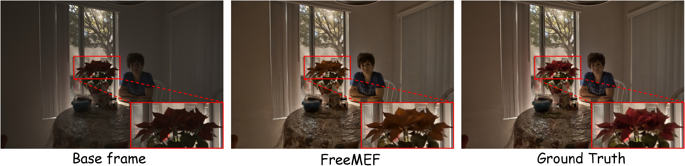

Recurrent State Space Module
Sequentially fuses any number of exposure frames into a global feature. The recurrent design keeps the model frame-count agnostic while preserving useful context from the exposure sequence.
Flexible-frame HDR imaging
A flexible-frame transformer for multi-exposure fusion that accepts varying exposure counts without retraining or architectural changes.
Existing MEF systems are usually locked to a fixed number of frames. FreeMEF breaks that constraint by decoupling reference features from the base frame, recurrently aggregating arbitrary exposure sequences, and returning global HDR guidance to the restoration backbone.
Sequentially fuses any number of exposure frames into a global feature. The recurrent design keeps the model frame-count agnostic while preserving useful context from the exposure sequence.
Targets the similarity paradox: saturated regions look dissimilar but need reference information most. EAHA balances cross-attention and self-attention with an extremity-aware query pathway.
Injects global exposure statistics into the feed-forward network, dynamically recalibrating contrast and brightness with learned affine modulation.
FreeMEF first travels through the exposure sequence to build global context, then comes back to guide the base frame through a U-shaped Transformer. The pipeline is designed for practical MEF deployments where frame counts can change across devices and capture modes.


The method first aggregates reference information into a global representation, then returns that context to the base frame through selective attention. This reduces ghosting while supporting arbitrary input lengths.
FreeMEF achieves the best metrics on both standard 3-frame evaluation and cross-dataset variable-frame testing.
| Method | Kalantari PSNR | Kalantari SSIM | Kalantari LPIPS | Real-HDRV PSNR | Real-HDRV SSIM | Real-HDRV LPIPS | FLOPs |
|---|---|---|---|---|---|---|---|
| HDR-Transformer | 27.024 | 0.935 | 0.093 | 25.131 | 0.930 | 0.079 | 95.261G |
| Restormer | 27.149 | 0.930 | 0.097 | 25.562 | 0.924 | 0.089 | 141.160G |
| AFUNet | 27.226 | 0.925 | 0.091 | 25.423 | 0.912 | 0.084 | 75.340G |
| FreeMEF | 28.418 | 0.948 | 0.081 | 26.077 | 0.940 | 0.074 | 41.496G |
+1.748 dB over second-best PSNR
+0.657 dB over second-best PSNR
+1.116 dB over second-best PSNR
| Method | 2-frame PSNR | 2-frame SSIM | 2-frame LPIPS | 3-frame PSNR | 3-frame SSIM | 3-frame LPIPS | 5-frame PSNR | 5-frame SSIM | 5-frame LPIPS |
|---|---|---|---|---|---|---|---|---|---|
| HDR-Transformer | 15.339 | 0.690 | 0.262 | 18.151 | 0.746 | 0.227 | 20.748 | 0.830 | 0.171 |
| SCTNet | 15.288 | 0.685 | 0.264 | 18.724 | 0.768 | 0.210 | 21.153 | 0.842 | 0.177 |
| AFUNet | 14.591 | 0.647 | 0.290 | 18.669 | 0.758 | 0.218 | 21.121 | 0.838 | 0.164 |
| FreeMEF | 17.087 | 0.731 | 0.225 | 19.326 | 0.774 | 0.199 | 22.269 | 0.851 | 0.149 |
The demo highlights multi-exposure fusion behavior under challenging motion, saturated highlights, and low-light regions, showing how FreeMEF preserves detail while suppressing ghosting artifacts.
FreeMEF recovers backlit faces, suppresses motion artifacts, and preserves high-dynamic-range details across under- and over-exposed regions.







FreeMEF
FreeMEF is designed for cameras and datasets where the exposure bracket is not fixed. One model can be trained and evaluated across heterogeneous frame counts while preserving HDR detail and reducing ghosting.